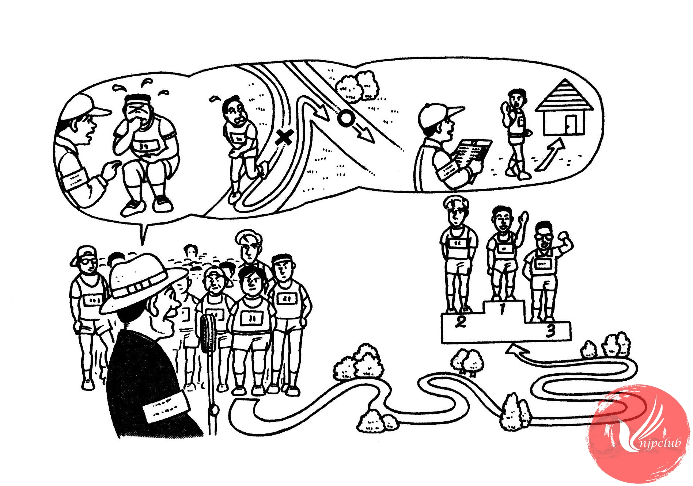

| 係員： |
皆さん、この マラソンは 健康マラソンですから、無理を しないで ください。 |
|
もし 気分が 悪く なったら、係員に 言って ください。 |
|
| 参加者全員： |
はい。 |
| 参加者１： |
すみません。コースを まちがえた 場合は、どう したら いいですか。 |
| 係人： |
元の 所に 戻って 続けて ください。 |
| 参加者２： |
あのう、途中で やめたい 場合は？。 |
| 係人： |
その 場合は、近くの 係人に 名前を 言って、帰って ください。 |
|
では、スタートの 時間です。 |
|
| ‐‐‐‐‐‐‐‐‐‐‐‐‐‐‐‐ | |
| 鈴木： |
ミラーさん、マラソンは どうでしたか。 |
| ミラー： |
2位でした。 |
| 鈴木： |
2位だったんですか。すごいですね。 |
| ミラー： |
いいえ、一生懸命 練習したのに、優秀できなくて、残念です。 |
| 鈴木： |
また 来年が ありますよ。 |